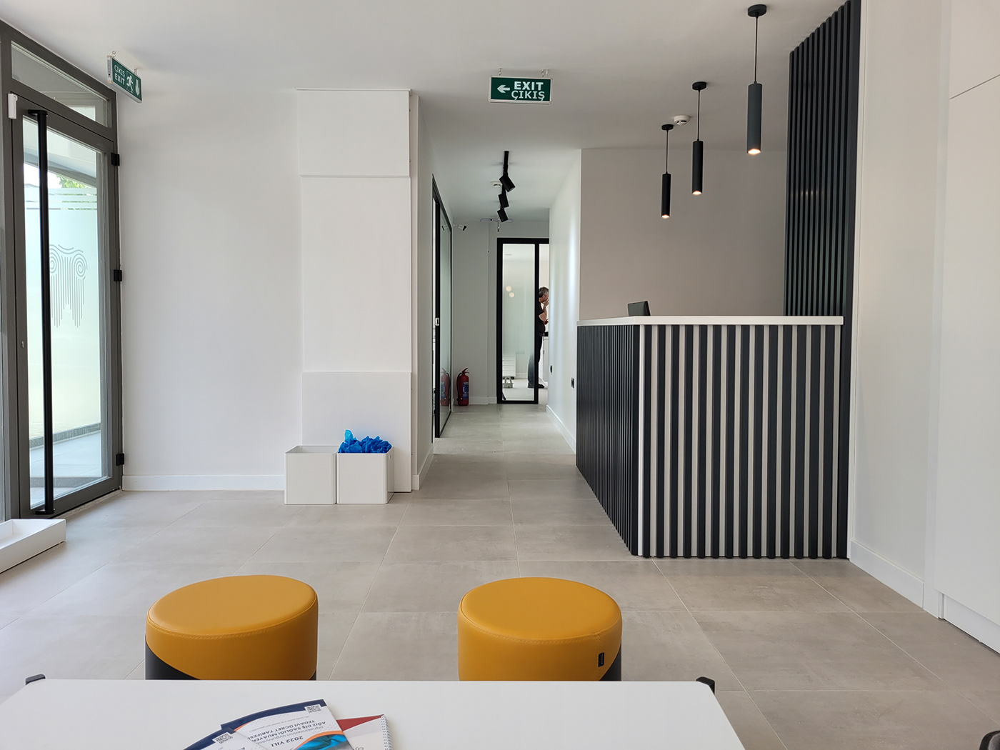

1 / 4

Dentoes Diş Sağlığı Polikliniği
2 / 4

Bir İşi
3 / 4

RASA Kurumsal Kimlik Çalışması
4 / 4

Anadolu Cerrahi Bayraklı
Günümüzde iş dünyası hızla değişirken, rekabetçi bir çevrede fark yaratmanın ve işinizin öne çıkmasının önemi giderek artmaktadır. İşte bu noktada, tasarım odaklı realizasyon fabrikaları yeni boyutlar kazandırarak kurumsal kimlikleri, ürünleri ve hizmetleri en üst düzeyde sunmayı amaçlamaktadır. Tasarımın öncelikli olduğu, yaratıcılığın sınırlarının zorlandığı ve inovasyonun temel alındığı bu yaklaşım, iş dünyasına taze bir bakış açısı sunmaktadır.
Tasarım, görsel estetiği sadece aşan bir olgudur. Doğru yapıldığında, tasarım bir hikaye anlatabilir, markanızı temsil edebilir ve hedef kitlenizle duygusal bir bağ kurabilir. Tasarım odaklı realizasyon fabrikaları, bu potansiyeli anlayarak, markaların ve işletmelerin kimliklerini en iyi şekilde yansıtan çözümler sunar. Logolar, web siteleri, ambalajlar ve diğer görsel unsurlar, tasarımın gücünü vurgularak hayata geçirilir.
Günümüzde, statik ve sıradan çözümler artık yeterli değil. İnovasyon, işletmelerin öne çıkmasının anahtarıdır. Tasarım odaklı realizasyon fabrikaları, sadece mevcut trendleri takip etmekle kalmaz, aynı zamanda geleceği şekillendiren yenilikleri de öngörür. Bu yaklaşım, işletmelere rakiplerinden bir adım önde olma fırsatı sunar ve özgün çözümlerin kapısını aralar.
Tasarım odaklı realizasyon fabrikaları, müşterileriyle sıkı bir işbirliği içinde çalışarak en iyi sonuçları elde etmeyi amaçlar. Müşteri odaklı yaklaşım, işletmelerin ihtiyaçlarını ve hedeflerini anlamayı ve bu doğrultuda özelleştirilmiş çözümler sunmayı içerir. İşte bu nedenle, tasarım odaklı realizasyon fabrikaları, müşteri memnuniyetini ve başarısını en üst düzeye çıkarmak için çaba sarf eder.
Tasarım odaklı realizasyon fabrikaları, sadece tasarım ve görsellikle sınırlı kalmaz. Aynı zamanda işletmelerin geleceğini şekillendiren bir merkezdir. Yenilikçi yaklaşımlar, dijital dönüşüm, sürdürülebilirlik ve teknoloji entegrasyonu gibi konularda liderlik etmek, bu fabrikaların en önemli görevlerindendir.
Tasarım odaklı realizasyon fabrikası, işletmelerin vizyonunu hayata geçirmek, fark yaratmak ve sıradışı sonuçlar elde etmek için bir kapı aralamaktadır. Yenilikçi yaklaşımlar, kreatif çözümler ve işbirliği odaklı çalışma prensipleri, bu fabrikaların temel değerleridir. Geleceğe yön veren, vizyon sahibi ve yaratıcı çözümlerle dolu bir dünyaya adım atmak için tasarım odaklı realizasyon fabrikasının kapıları her zaman açıktır.